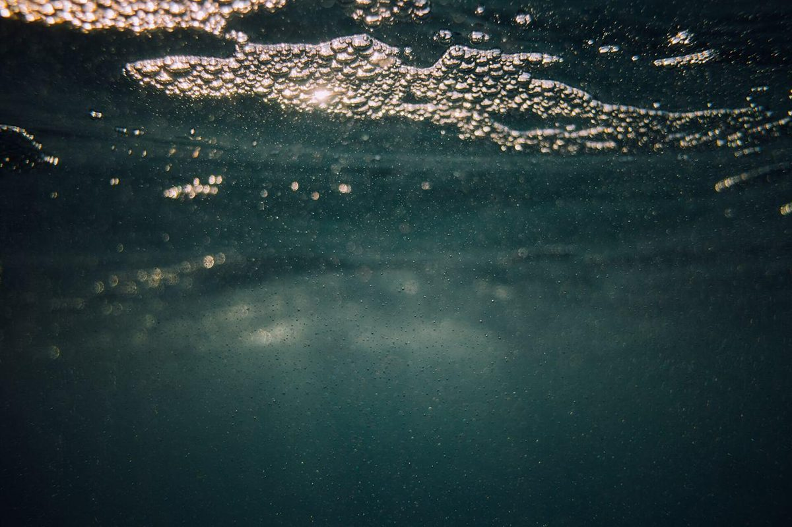
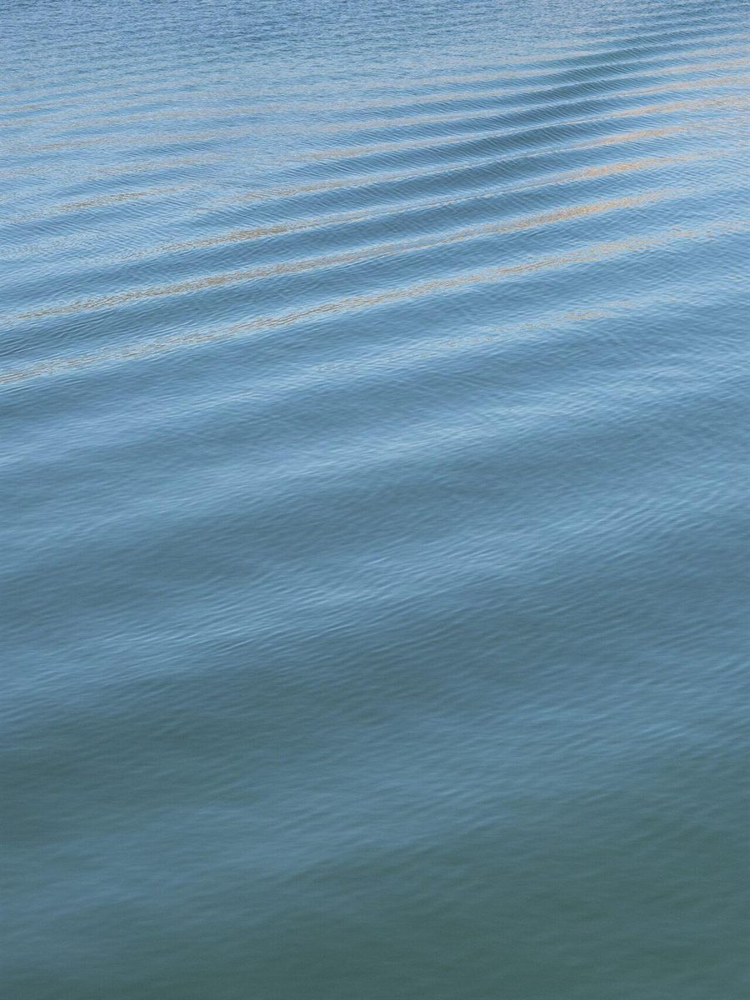
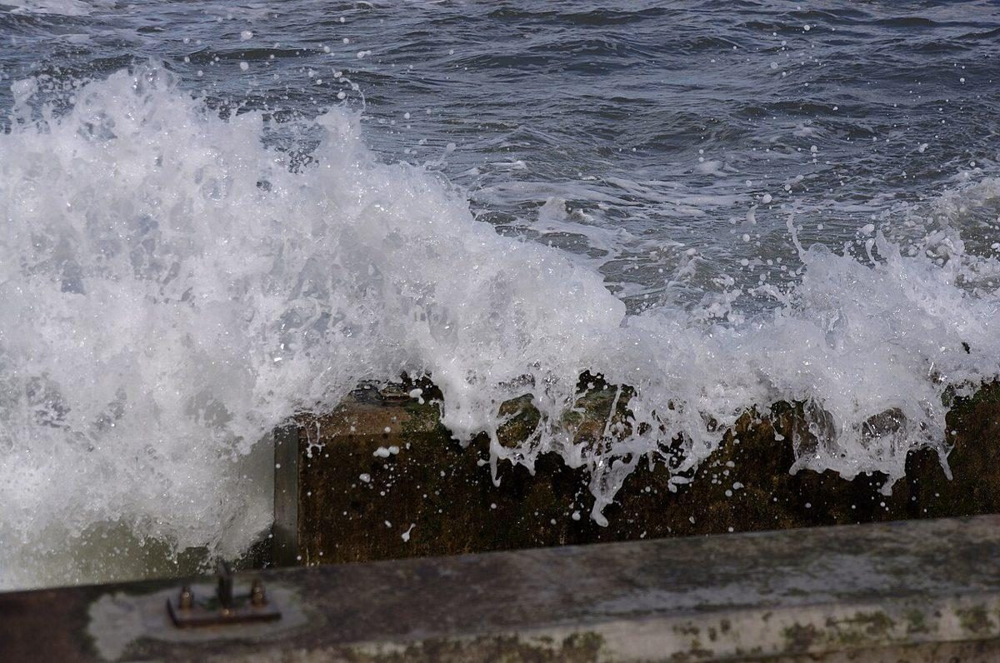
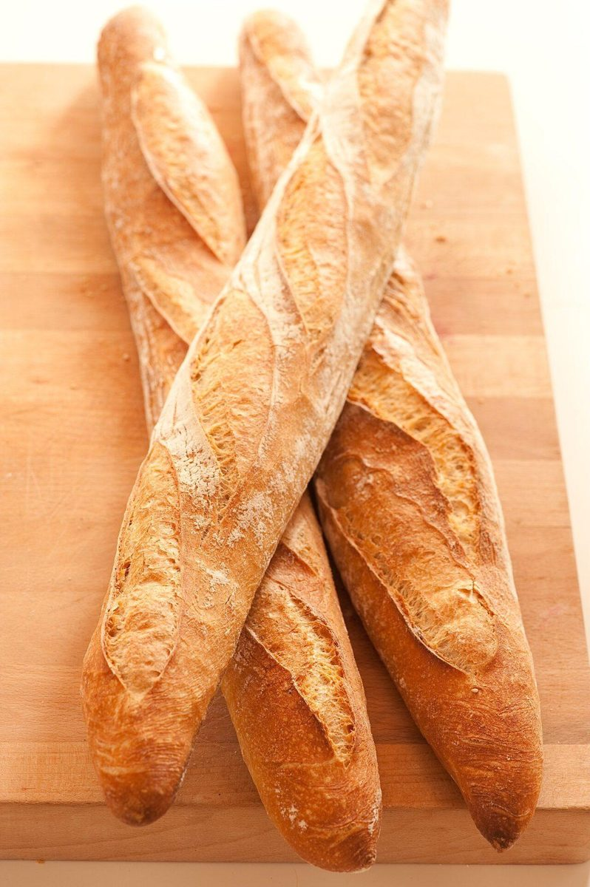
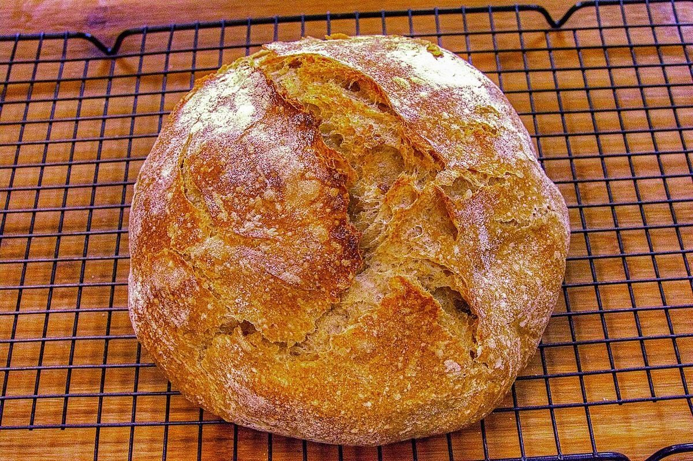
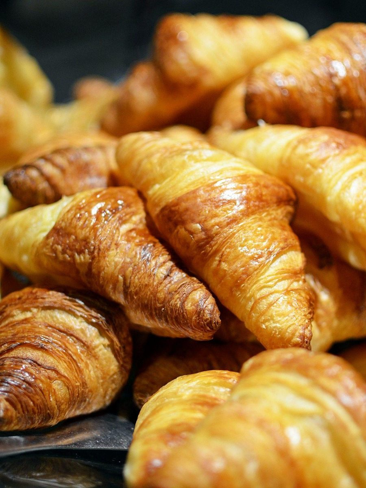

制作側の連想
屋号の「divers」から、潜水日誌へ
店名の由来は分かりません。制作側は「divers」という綴りから「ダイバー」を連想し、このサイトを潜水日誌(ログブック)に見立てました。ページを移るごとに水深が5mずつ深くなり、背景の色も少しずつ暗くなります。中津川市は海のない岐阜県の内陸にあるので、潜るのは想像の中の海です。お店の理念・由来とは無関係の、制作側の連想です。
潜水ログ 第1項
水面から、泡の層へ。
写真は中津川市のものではありません。水のイメージとパンのイメージを交互に並べた、国外・撮影地不明のフリー素材です。
- 0m

国外のイメージ(米国) 水面。光がいちばん明るい深さ。
- 3m

国外のイメージ(英国) 波の下で、泡が細かく砕けていく。
- 6m

撮影地不明のイメージ 浮上してひと息。パンの写真は雰囲気のイメージです。
- 9m

国外のイメージ(米国) 焼き網の上の丸いかたち(イメージ)。
- 12m

撮影地不明のイメージ 光が少し黄みを帯びる深さ(イメージ)。